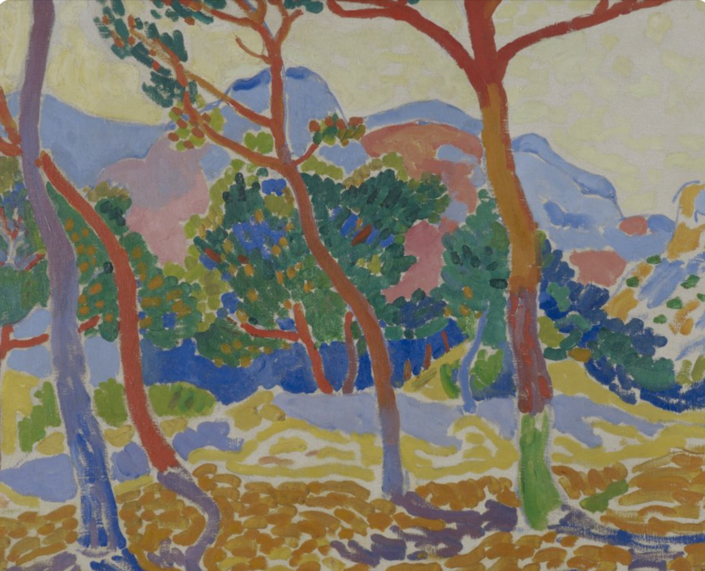

Fauvism

Andre Derains “Estaque” is an excellent example of a fauvist piece of artwork. The reading describes Fauvist's use of color as “responding to the needs of the composition itself rather than to the naturalistic demands of the subject matter”, which perfectly describes how Derain utilizes color in this piece. The trees grow from blue to red and explode with orange and green leaves. The mass of red and orange ground could only be realistic if the entire scene was on fire, but this scene is light and optimistic. Colors have freed themselves from their iconography and are now able to stand on their own, unassociated with both reality and historical meaning.

Derains Estaque paintings are referred to as “the most advanced, accomplished, and abstract to emerge from Fauvism”, and I couldn’t agree more. The constant curve and flow in the road, the trees, and the people keeps the viewer's eyes circulating and moving all across the canvas. The people are rendered without the natural world in mind, which gives them a beautiful sense of freedom. Fauvism is often described as “frenetic”, which is an accurate description of this piece and what makes it so intriguing. The rapidness of the brush strokes combined with the unrealistic color use and composition makes this piece feel wild and free.